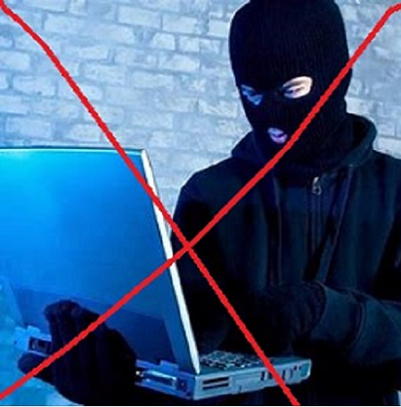
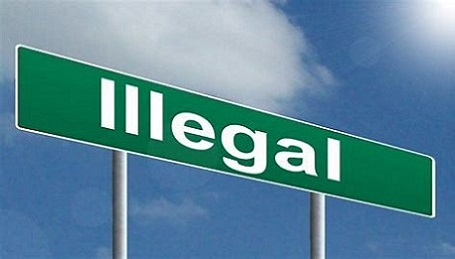

_
_
_
_

Très souvent,que ce soit en famille, sur les médias ou au travail, on sous-entend un terme péjoratif quand on parle de 'hacker'.
On a en tete l'image d'une personne capuchée pianotant à toute vitesse sur le clavier son ordinateur portable (voir à gauche)
Alors qu'en fait, PAS DU TOUT !!! Que neni ! La définition exacte (objective) d'un hacker serait plutot:
n. masc. Informaticien s'interessant plus particulierement au fonctionnement avancée des systemes informatiques
Vous etes suremnt en train de vous dire, 'Mais alors pourquoi les hackers sont connus pour leurs actes illegaux?'Pour vous repondre, il est vrai que ceratins, pas tous les hackers, agissent illégalement pour le gout du défi, l'argent que sais-je...
Mais ce n'est pas le cas de tous les hackers, je vais vous en donner la preuve : il existe en France des hackers légaux et meme des formations reconnus de 'hacking'
En fait le hacker légal est plutot connu sous le nom d'expert en securite informatique, ingenieur cybersecurite, pentester...mais le travail reste le meme
Le hacker a de tres fortes connaissances dans 3 modules informatiques :
-> La programmation
->Le systeme Unix (ou linux)
-> Les reseaux
En fait,il sait juste associer ses connaissances , et les utiliser sous l'angle de la cybersecurite.
Ce qui est difficile, c'est justement savoir les mettre sous l'angle de la cybersecurite.
Aujourd'hui, il existe de nombreuse raisons de se reconvertir ou de se lancer dans la cybersecurite.
Les raisons les plus évidentes sont :
Il n'y a de profil unique pour devenir hacker.Cependant il y a des competences, des habitudes et des caracteres que l'on retrouve plus souvent parmi les hackers
Par exemple, voici quelques points forts :
->La curiosité que je classerai comme (presque) obligatoire dans ce metier.
->La sérieusité et la détermination, facultatif mais tres important.
->Etre réactif pourrait également vous éviter des ennuis et vous aider dans ce metier ou l'on ne sait jamais ce qui nous attend.
->Le respect d'autrui, obligatoire, vous devez savoir respecter l'intimite des informations auxquelles vous avez acces. (Ce qui distingue les hackers légaux des illégaux)
Si vous ne vous retrouvez pas parmi certaines de ces compétences, ce n'est pas grave (sauf s'il s'agit du respect bien-sur), vous pouvez tout de meme devenir hacker, il s'agissait juste de quoi vous motiver

LA réponse est clair: l'autorisation ou non de s'introduire dans un systeme.
Dans le domaine de la cybersecurité, la frontiere entre légal et illégal est très proche, il faut donc faire attention à TOUT ce que vous faisez sur votre ordinateur.
La règle à suivre pour rester dans le 'légal' est simple : posséder une autorisation écrite par l'administrateur réseau du domaine vous permettant de réaliser un test d'intrusion sur les systemes choisis.
MAis ce n'est pas finit, des limites auront été fixés lors de la signature de ce contrat. Jusqu'ou vous pouvez aller, quels systemes visés...
Soyez donc rigoureux lors de votre pentest et ne violez pas le contrat aux risques de grosses amendes, de prison et également de perte de réputation et d'honneur